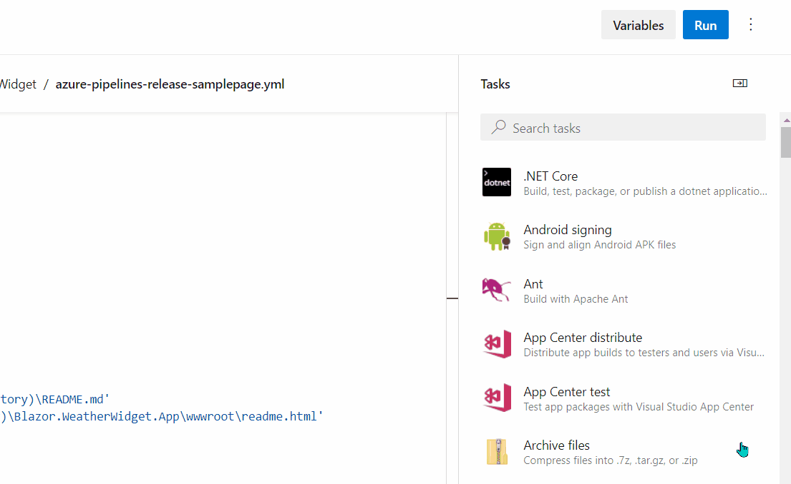
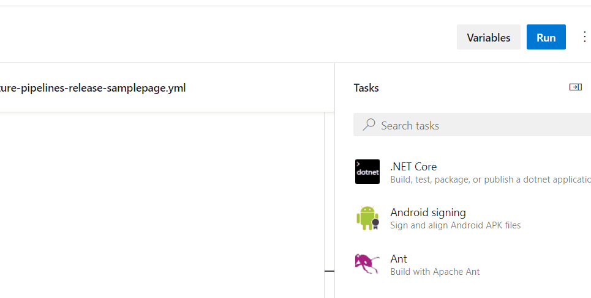

In this post we will discover how to handle appsettings.json secrets (like API keys, passwords etc.) in a .NET app and eventually how to deploy a protected app and let Azure DevOps handle the secret replacement.
Some time ago I wrote a post on how to create a new component in Blazor and then publish it as a Nuget package. During the post I described how to access and process OpenWeather data, an action that needs an API key to be included in every request towards their API. For that guide, the API key was included in the appsettings.json; it was just a temporary key which I then deleted. In a real life application though, you will find yourself in need of a production key that will be used only -where else- in production, and must not be part of your repo for obvious security reasons.
The source of the described Blazor component is public in Github, so handling appsettings.json secrets is even more important in a public repo. In any case, it is generally a bad practice to push keys even in private repositories.
Let’s start by taking a look in the appsettings.json file of the Blazor component we were talking about:
{
//...
"WeatherWidgetSettings": {
"OpenWeatherApiKey": "XXXXXXXXXXXXXXXXXXXXXXXXXX"
},
//...
}You’ll notice that line 4 contains a sensitive string, the secret (the OpenWeather API Key) used to retrieve data. If you check the history of that file in Github, you will notice that I during an earlier push I had in that very place the actual key! How crazy was that, right? My private key free for the entire world to use, an action that could potentially lead to some crazy overcharge!
So step 1, let’s delete the compromised key for a good night sleep; step 2, create a new key and don’t publish it; step 3, go to the root of your project (where your appsettings.json file lives), open your favorite shell and run dotnet user-secrets init. By running this piece of code your .csproj file will be enriched with the following lines:
<PropertyGroup>
<UserSecretsId>0130c301-d82b-41ac-9620-dbbfea3d427d</UserSecretsId>
</PropertyGroup>Which simply signify that you are ready to add your first secret in the safe storage by running the following command:
dotnet user-secrets set "WeatherWidgetSettings:OpenWeatherApiKey" "YOUR_BRAND_NEW_SECRET_KEY"
It was that simple. We just flatten the structure of the appsettings.json entry and we separate each nesting level by a colon (:). Now all we have to do is to just keep the structure of the appsettings.json as it was (aka do nothing), and the value of that key will be replaced with the one living in the safe storage every time you run the app.
Use
dotnet user-secrets listto get a list with all secrets stored anddotnet user-secrets remove "WeatherWidgetSettings:OpenWeatherApiKey"to remove a key from the safe storage. Also, read more about “Safe storage of app secrets in development in ASP.NET Core“.
So we are done with that and we can safely push our code to a public (or private) repo; the secrets are safe. But what about if we have (and we should) CI/CD set up, and we are expecting our pipeline to automatically deliver every new version without having to manually change files.
Enters the File Transform Task, which you need to add in your yml file. Assuming prior knowledge in Azure DevOps, I will skip the entire process and cut right to the chase: Once you find the task, choose JSON as the File Format and /**/appsettings.*.json as Target Files. This will instruct the task to recursively search your files for anything that matches the Target Files pattern and make adjustments to the contents of those files.
The section “Steps to setup Azure DevOps” in this blog post, describes in more details how to create and edit a pipeline.

Almost ready! Up until now we prepared our pipeline for the secret replacement, but we also need to add the key to be replaced. This is done in a similar way as with the dotnet user-secrets set of commands, with the difference that we use Variables instead. Since we are already in the Pipeline Edit form, find the Variables button in the upper right corner and add a new variable with the key in the format WeatherWidgetSettings.OpenWeatherApiKey (mind the . here instead of the :):

Run your pipeline and enjoy!
In case you want to see a complete working
yml, you can check the one of the mentioned Blazor Component: ttps://github.com/georgekosmidis/Blazor.WeatherWidget/blob/main/azure-pipelines-release-samplepage.yml.
This approach was a free and simple solution that you can use to protect and secure your projects pretty fast. Next step, we should use this knowledge to deploy and use an Azure Key Vault, a specialized service from Azure, a far more advanced and centralized solution for secret management.
The post Secrets management for ASP.NET Core and Azure DevOps first appeared on George Kosmidis.